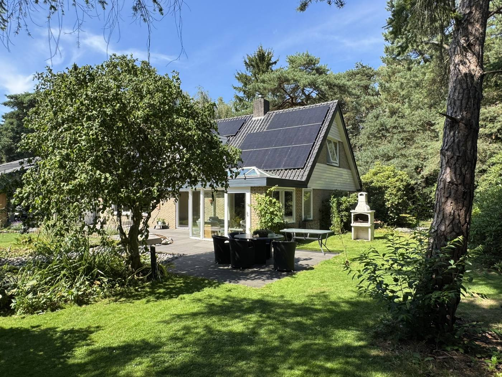
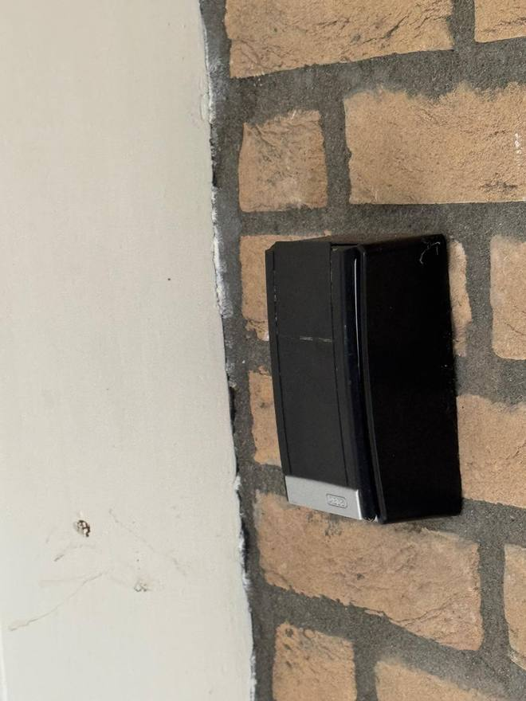
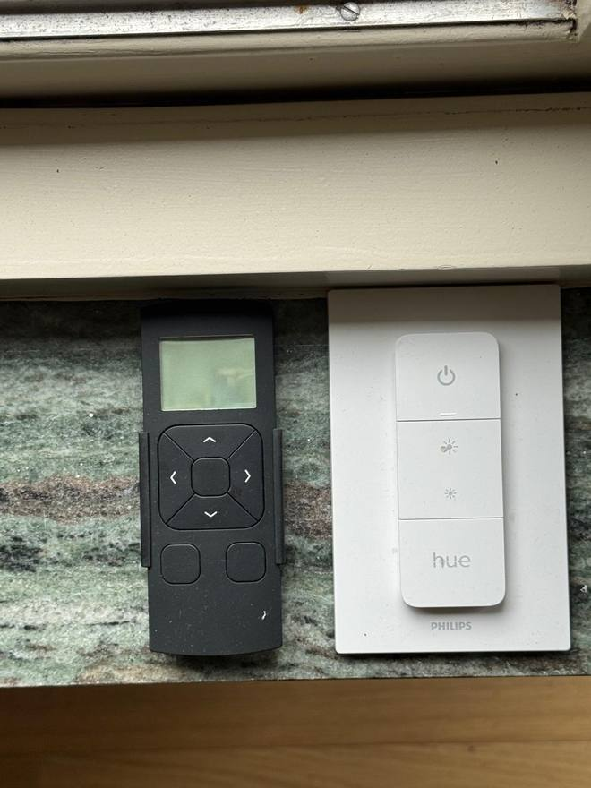
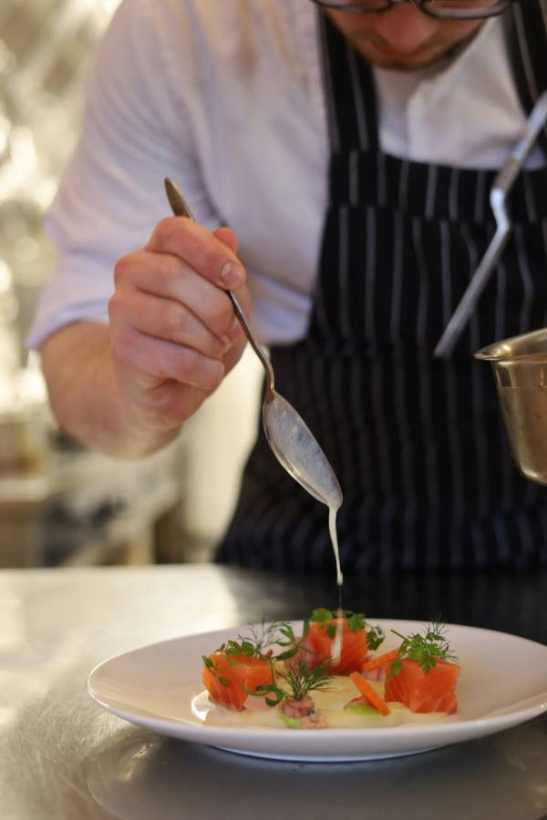

Huisgids voor onze gasten / House guide for our guests
Fijn dat jullie er zijn. In dit boekje staat alles wat je niet kunt raden: hoe de verwarming in twee zones werkt, waar de afstandsbedieningen liggen, hoe de koffiemachine wil worden behandeld en welke container op dinsdag aan de weg moet. Doe verder alsof je thuis bent, want dat is de bedoeling.
We’re glad you’re here. This booklet covers everything you could not guess: how the heating works in two zones, where the remotes live, how the coffee machine likes to be treated, and which bin goes out on Tuesday. Beyond that, make yourself at home, that’s the whole idea.
Markollenweg 2, 7451 HH Holten · Sander Jongsma · 06 12 99 28 51


AankomstArrival
Sleutelkastje, wifi en de eerste stappen in huis.Key safe, wifi and your first steps inside.
Bekijken →Open →

Het huisInside the house
Licht, verwarming, ventilatie, keuken, koffie en tv.Lighting, heating, ventilation, kitchen, coffee and TV.
Bekijken →Open →

Zwembad & tuinPool & garden
Het zwembad bedienen en de tuin sproeien met de bron.Working the pool and watering the garden from the well.
Bekijken →Open →

PraktischPractical
Huisregels, post en afval, fietsen en het speelgoed.House rules, post and waste, bikes and the toys.
Bekijken →Open →

OmgevingNearby
Wandelen, musea, water en dagtripjes rond Holten.Walking, museums, water and day trips around Holten.
Bekijken →Open →

Eten & drinkenWhere to eat
Onze vaste adressen, van patat tot sterrenrestaurant.Our regular spots, from chips to a Michelin star.
Bekijken →Open →
ContactContact
Noodnummers, zorg in de buurt en de vertrekchecklist.Emergency numbers, local care and the departure checklist.
Bekijken →Open →